morning-shapes@0.1.0-rc.3 — is this the reference's quality?
Top: the reference at its best. Below: the first screens the agents built from the prompt (one sample). Approve the direction only if
someone who knows the reference would take these for the same team's work.
Reference
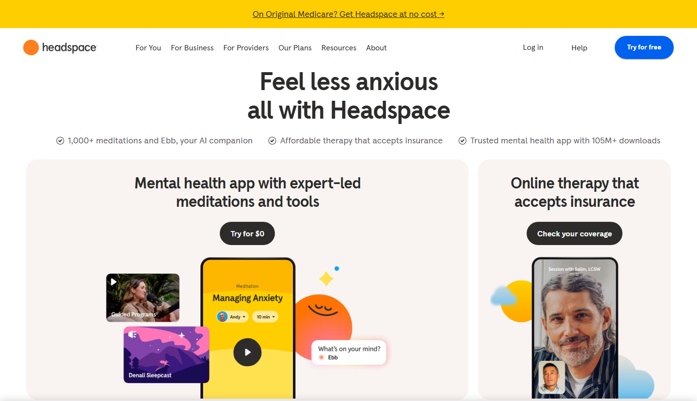
Home first screen: bold centered headline, cream rounded product panels with a floating vignette (phone, cards, a bubble, a sparkle), ink pills, blue header pill on a yellow announcement bar. The bar for hierarchy and warmth of the neutral base.
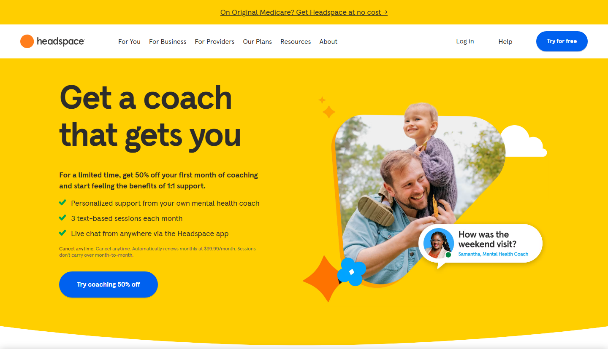
A topic hero at its best: full-bleed yolk-yellow band with an arched bottom, 64px tight headline, green-tick checklist, blue pill, photo cut into a blob with an offset orange edge, cloud and four-point sparkles.
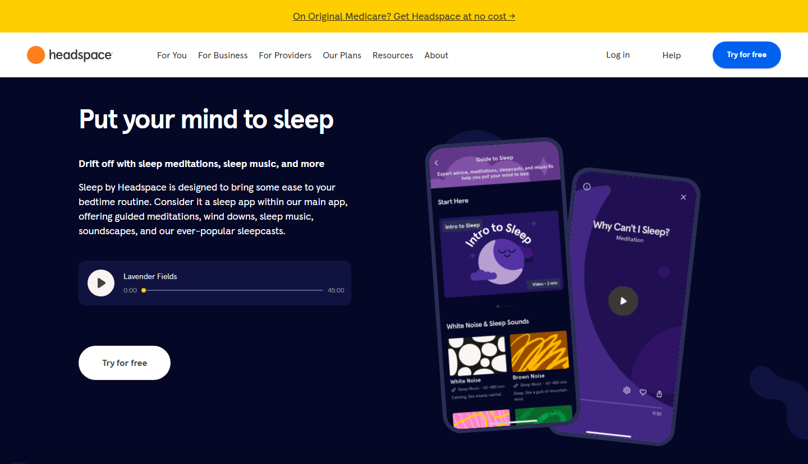
The night palette: navy band, white type, indigo audio panel with a yellow progress knob, white pill, tilted app mockups — the basis for the derived dark appearance.
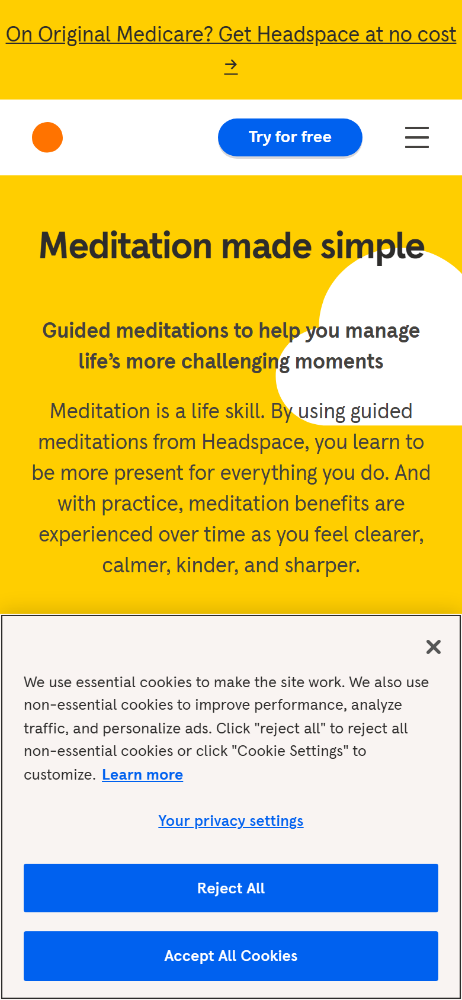
Phone: yellow hero band stacked, centered text, compact header with dot + blue pill + menu, spot-pictogram list with underlined titles, cream info card and circle pagination.
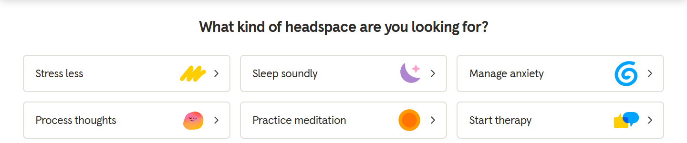
Topic rows with breathing glyphs: bordered 8px rows, 22px labels, flat two-color glyphs and chevrons — the signature glyph scale and density for lists.
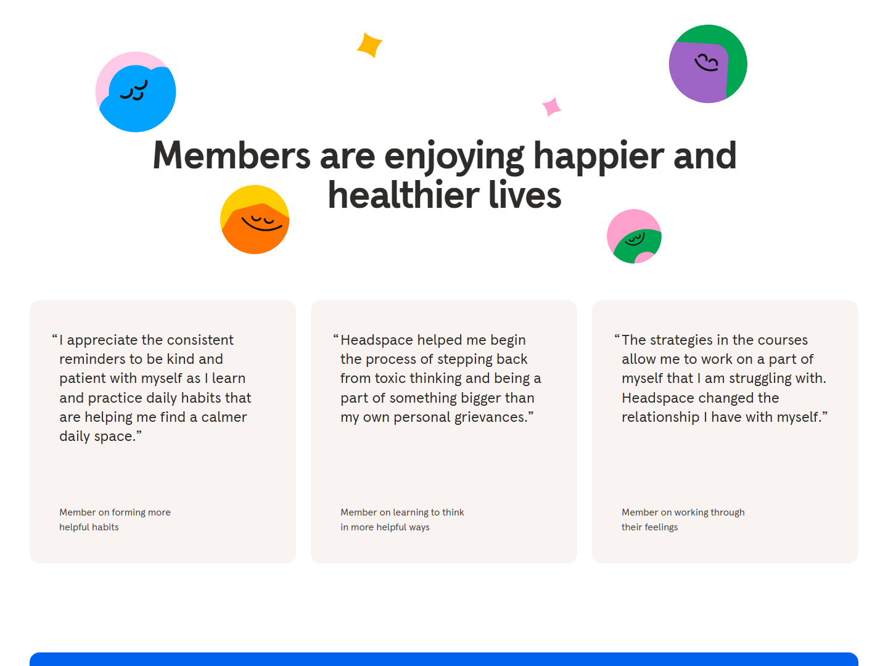
Confetti heading: two-color discs and sparkles scattered around a 64px heading, cream 16px-radius testimonial cards. (The faces on the discs are the mascot and must not be copied — the composition, sizes and colors are the bar.)
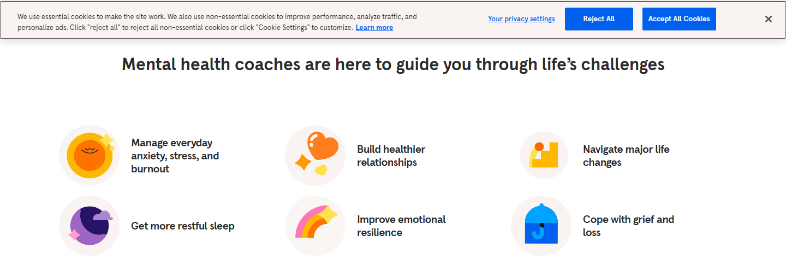
Spot pictograms in cream circular plates beside bold item titles — the flat shape kit at small scale, with crescent shading and sparkles.
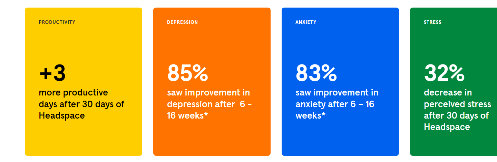
Color stat tiles: four saturated fields with eyebrow, big bold number and caption — how the language carries data.
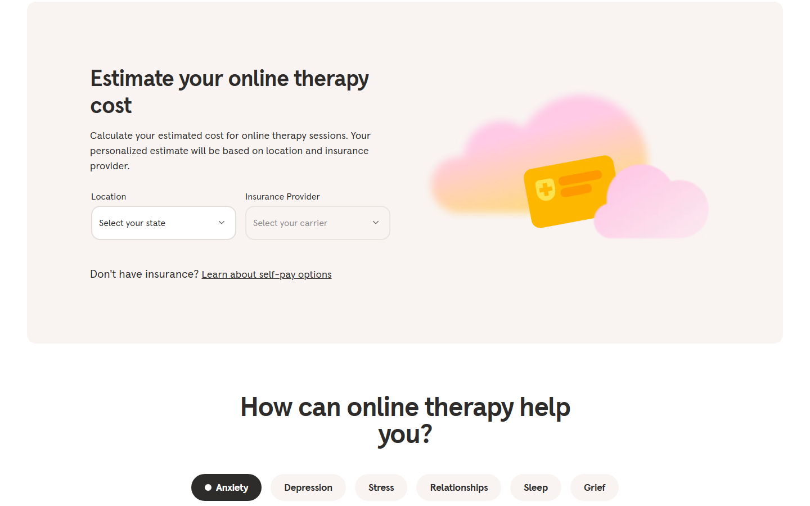
A form inside a cream 24px panel with warm-grey selects, a blurred-cloud illustration, and the pill tabs with the active ink pill + white dot.
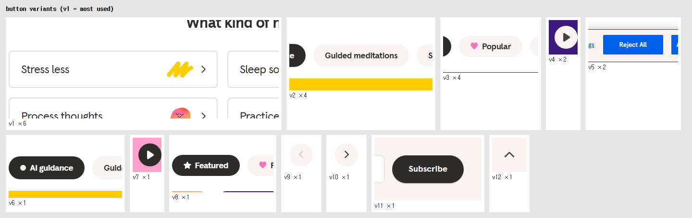
The button family: bordered topic rows, cream and ink pills with dot, circle arrows and play buttons.
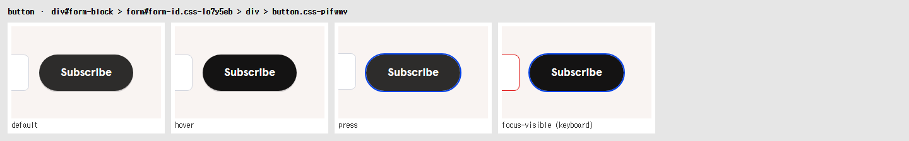
The pill's states: default on its 2px ledge, darker hover, pressed (sunk 2px, ledge gone) with the blue focus ring.
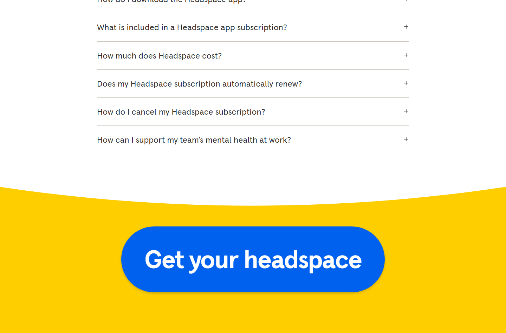
FAQ rows with warm rules and plus icons, then the yellow closing band with a concave arched top and the mega blue pill.